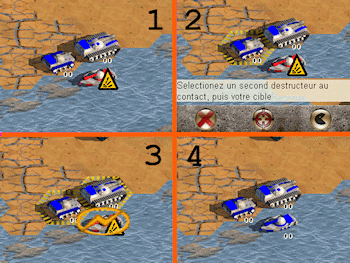

While approaching your destroyer, you have neutralized the speed boat: your opponent
can no longer use it, capture it!

- Your two destroyers are in contact with the target.
- Click on one of them, then click the control icon that just appeared.
- Click on your second destroyer, then the target.
- Confirm action.